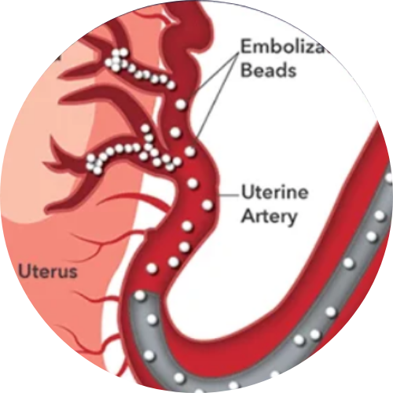

State-of-the-art minimally invasive interventional radiology solutions at SLVC Clinic for uterine fibroids and prostate conditions.
Our experienced interventional radiologists provide innovative, non-surgical treatments designed for faster recovery, minimal discomfort, and excellent clinical outcomes using advanced imaging and precision techniques. Our advanced treatments offer safe, effective, and long-lasting symptom relief with faster recovery.

Uterine fibroids are non-cancerous growths that can cause heavy menstrual bleeding, pelvic pain, frequent urination, bloating, and fertility concerns. UFE is a safe, effective, and non-surgical treatment option that helps shrink fibroids while preserving the uterus.
Using advanced imaging, a thin catheter is guided through blood vessels to the arteries feeding the fibroids. Tiny medical particles are released to block blood flow, causing the fibroids to shrink naturally over time. This helps relieve symptoms without the need for open surgery.
Prostate Artery Embolization (PAE) is a minimally invasive treatment for benign prostatic hyperplasia (BPH), a common condition in aging men that causes urinary problems. PAE provides long-lasting symptom relief without traditional surgery.
During PAE, a tiny catheter is guided through blood vessels to reach the arteries supplying the prostate. Small medical particles are injected to reduce excess blood flow, causing the prostate to gradually shrink. This improves urine flow and reduces urinary discomfort.
We combine expert medical care, state-of-the-art imaging technology, and a patient-centered approach to deliver safe, effective, and personalized interventional radiology treatments. Our goal is to ensure comfort, safety, and excellent clinical results for every patient.
Take the first step toward better health by scheduling a consultation with our specialists at SLVC Clinic. Our experts will carefully evaluate your condition and create a personalized treatment plan for optimal recovery.
Book Appointment